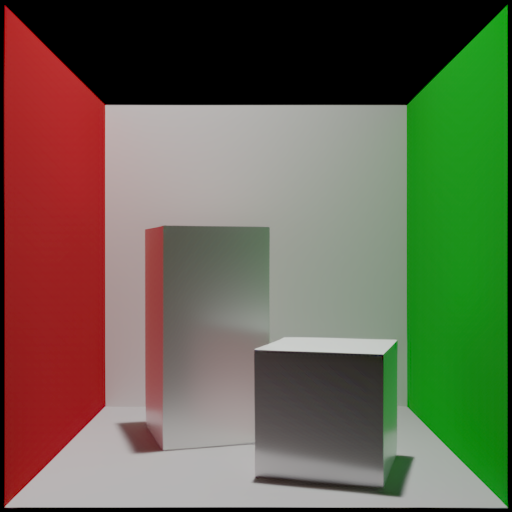
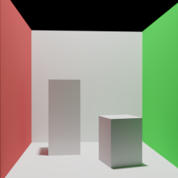
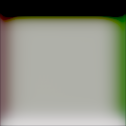
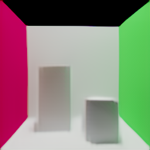
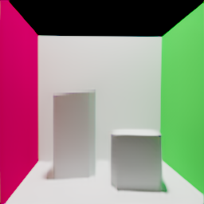
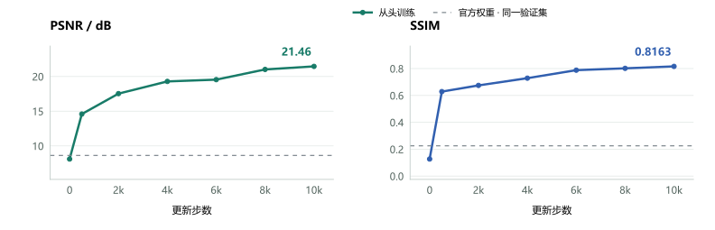
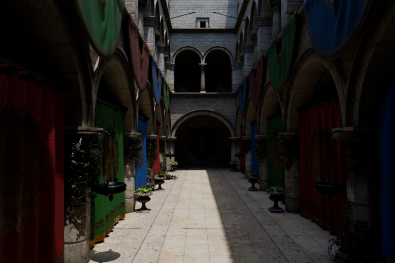

Transformer / Neural Rendering
从三角网格
到渲染图像
用注意力连接几何、材质与相机。复现官方模型推理，并在 Cornell 场景族中观察图像如何被学会。


Cycles 参考模型预测38.30 dB
官方示例 · PSNR
0.9771
官方示例 · SSIM
V1 Base
固定预训练权重 · 未微调
从色块到轮廓
训练详情 ↗



192 组 Cornell 配置，从头训练至 10,000 步。128 张验证图的平均 PSNR 为 21.46 dB、SSIM 为 0.8163；边缘与阴影仍有误差。

128 张验证图的均值；虚线为同一验证集上的官方权重。连线仅连接已评估检查点。

Scene / Representation
复杂场景的输入边界
保留 Sponza 的完整几何与材质，检查 V1 对 UV、透明和环境光的表示限制。这是 Cycles 参考，不是模型预测。
场景与参考 ↗